About Me
Hi, I'm Ricco! I'm a Computer Science student at the National University of Singapore with a passion for building things that matter—whether it's autonomous robots navigating mazes or mobile apps connecting university students.
My fascination lies in the intersection of hardware and software, particularly in Compiler Design and Embedded Systems. There's something deeply satisfying about crafting efficient code that brings machines to life, from custom sensor integrations to precision-controlled robotics. I thrive on the challenge of building systems from the ground up and optimizing existing ones.
Beyond the digital realm, I find balance through music and adventure. You'll catch me playing clarinet in ensembles, where precision and teamwork create harmony—skills that translate beautifully to collaborative coding. When I need to recharge, I'm out bouldering or kayaking, where problem-solving meets the great outdoors.
I'm driven by the belief that technology should enhance human experiences and solve real-world challenges. Always eager to learn, collaborate, and push the boundaries of what's possible.
Projects
FocusPal
🏆 Winner - Hack Davis Hackathon
A productivity and focus enhancement application that won the Hack Davis hackathon. FocusPal helps users maintain concentration and improve their study habits through innovative features designed to combat distractions and promote sustained focus.
Built during the intensive hackathon environment, this project showcases rapid prototyping and collaborative development skills while addressing real-world productivity challenges faced by students and professionals.
Achievement:
- 🏆 Winner at Hack Davis hackathon
- Developed during intensive 24-48 hour hackathon timeline
- Demonstrated rapid prototyping and teamwork skills
- Successfully pitched to judges and technical panel
Project Focus:
- Productivity and focus enhancement tools
- User-centered design for distraction management
- Innovative approach to study habit improvement
- Real-world problem solving through technology
- Collaborative development in competitive environment
The A-maze-ing Race
Autonomous Maze-Solving Robot
An autonomous robot designed to navigate through a complex maze in the shortest time possible. The robot uses color detection to interpret navigation instructions placed throughout the maze.
Various colored papers along the maze provide directional cues, making this a challenging exercise in sensor integration and autonomous navigation.
 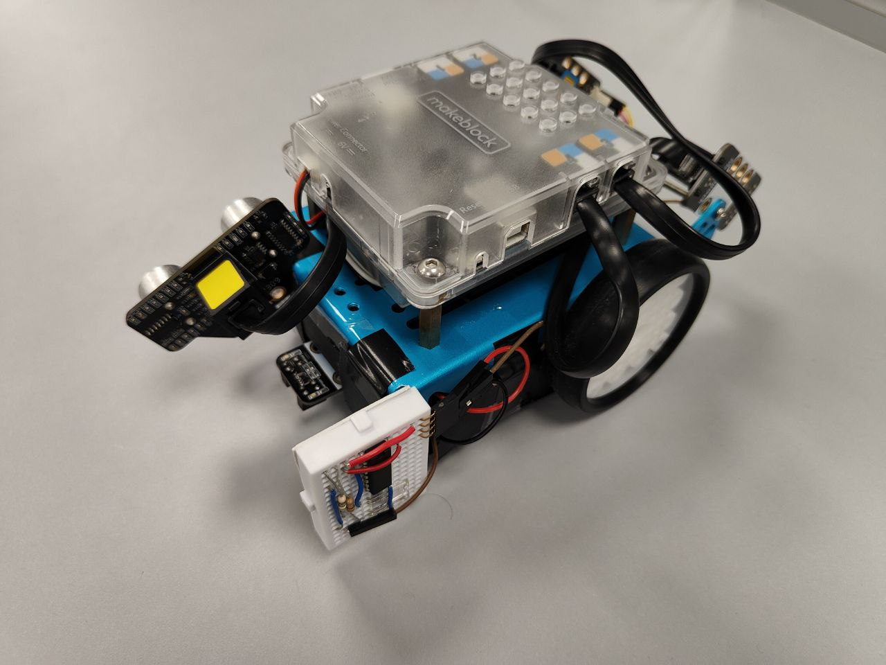
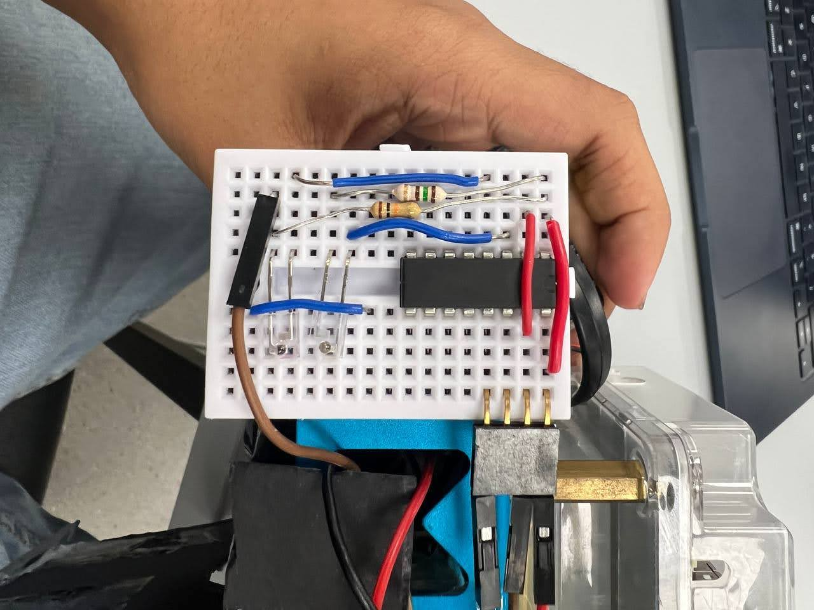
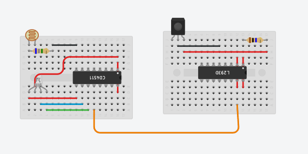
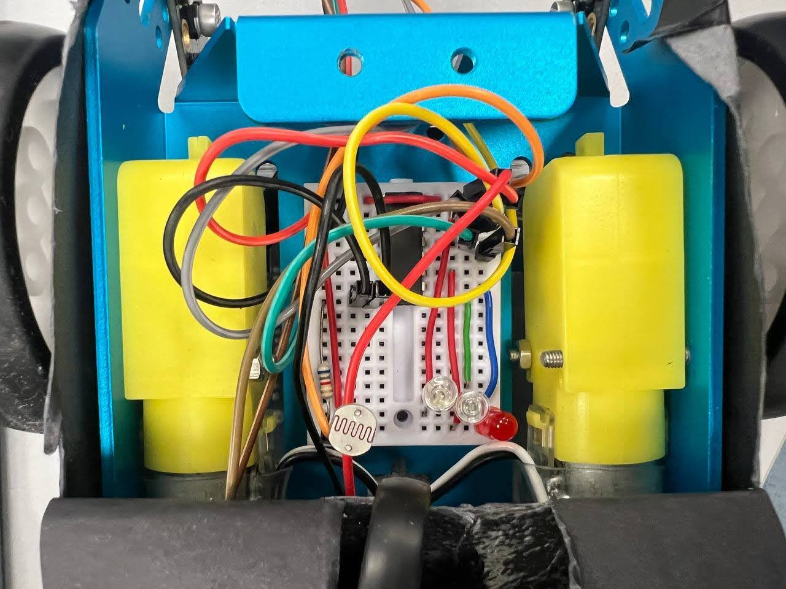
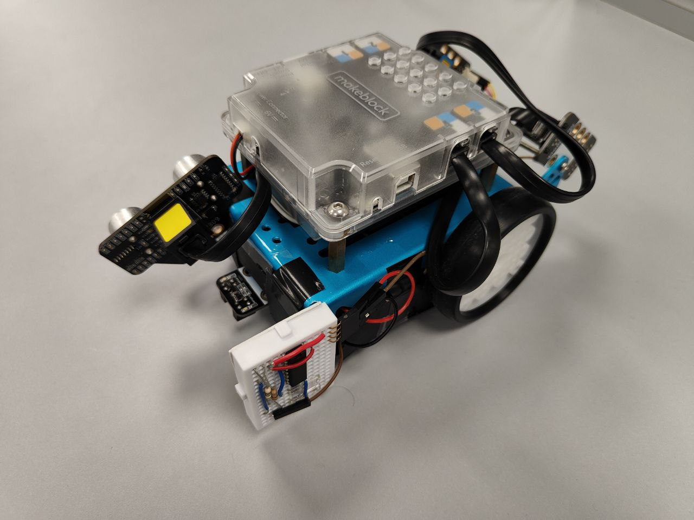
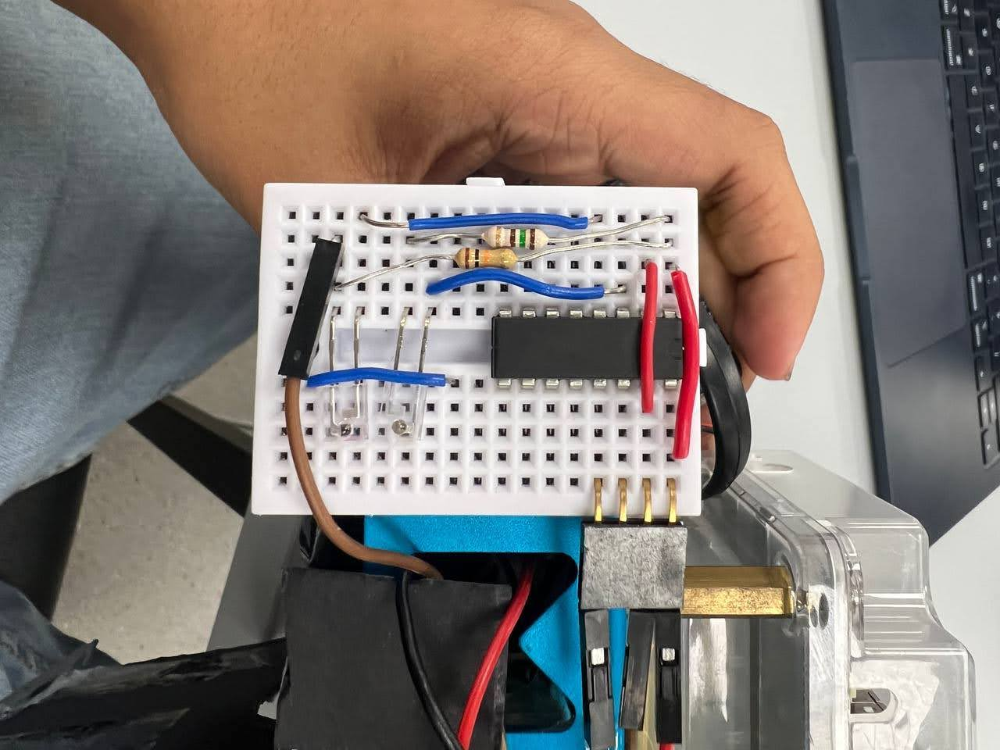
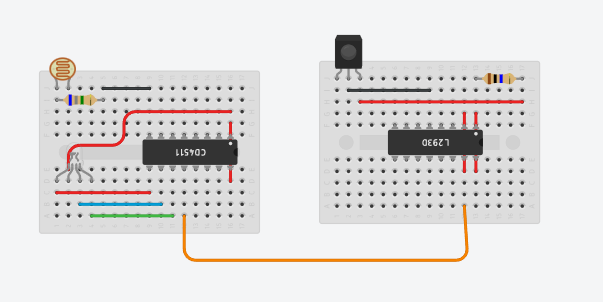
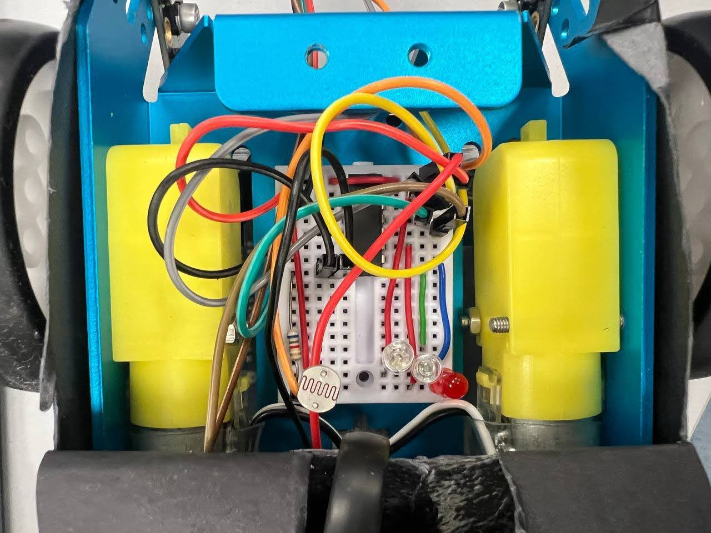
Tech Stack:
- Arduino microcontroller programming in C++
- Custom sensor integration (LEDs, LDRs, IR emitters/detectors)
- TinkerCAD for circuit design and prototyping
- Hardware assembly and mechanical engineering
- Real-time embedded systems programming
Key Features:
- Custom sensor integration using LEDs, LDRs, and IR components
- Collision avoidance system
- Line detection for stopping points
- Color-based navigation system
- Victory tune playback upon completion
Morpheus: AI Dream Analysis
Full-Stack AI Application | HackPrinceton Spring 2025
An AI-powered dream analysis application that guides users through a comprehensive four-step process: collecting dream information, processing data, generating personalized insights, and creating visual representations. Built with modern web technologies and integrated with multiple AI services for both analysis and visualization.
The application features a conversational interface for dream collection, LLM-powered psychological analysis, and AI-generated dream visualizations using Stable Diffusion, creating a complete dream interpretation experience.
Tech Stack:
- React & TypeScript for responsive frontend development
- Python backend with OpenAI/LLM integration
- Fireworks AI for Stable Diffusion image generation
- Supabase for data storage and user management
- Tailwind CSS & Framer Motion for modern UI/UX
- Google Gemini AI for advanced dream interpretation
Key Features:
- Conversational dream data collection interface
- AI-powered symbolism and emotional analysis
- Personalized insights and psychological interpretation
- Stable Diffusion dream visualization generation
- Interactive mood-based UI with dynamic backgrounds
- Dream journaling and pattern tracking
- RESTful API with structured JSON output
- Automated testing with Jest and React Testing Library
UNIBUDS: Swipe right to Friendships!
Full-Stack Mobile Application | NUS Orbital Project
A comprehensive social networking mobile application built with React Native that connects university students through smart matching algorithms. UNIBUDS facilitates meaningful friendships and study partnerships through location-based sorting, interest matching, and real-time communication features.
Successfully deployed with full authentication, matching algorithms, chat systems, interest groups, and Telegram bot integration for seamless user engagement.
Tech Stack:
- React Native & TypeScript for cross-platform mobile development
- Supabase for real-time database and authentication
- Python Telegram Bot API with Heroku deployment
- GitHub for version control and collaborative development
- Jest for automated unit and component testing
Key Features:
- User authentication & profile creation with validation
- Smart matching algorithm with swipe functionality
- Real-time chat system between matched users
- Location-based sorting and course/university filtering
- Interest groups for study sessions and social meetups
- Social feed for sharing updates with friends
- Telegram bot integration for notifications
- Comprehensive settings and account management
Obstacle Course Robot
Precision Engineering & Autonomous Navigation
A battery-powered robot designed to navigate through an obstacle course featuring slopes and bumps. The challenge required precision engineering to deliver a ping pong ball over a wall while stopping exactly 5cm away from it.
Built within strict size constraints (30cm³) and a 60-second time limit, this project showcased mechanical design and programming precision.
 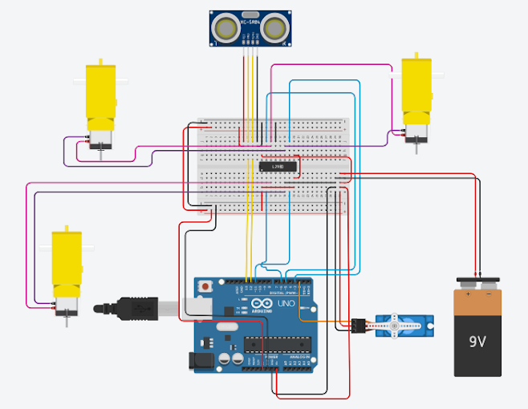
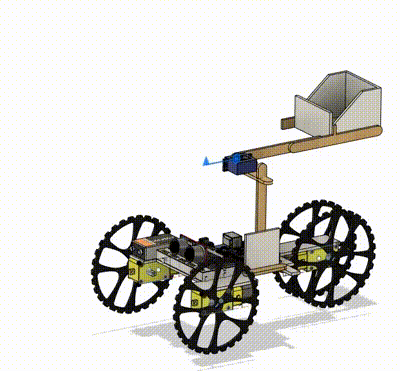
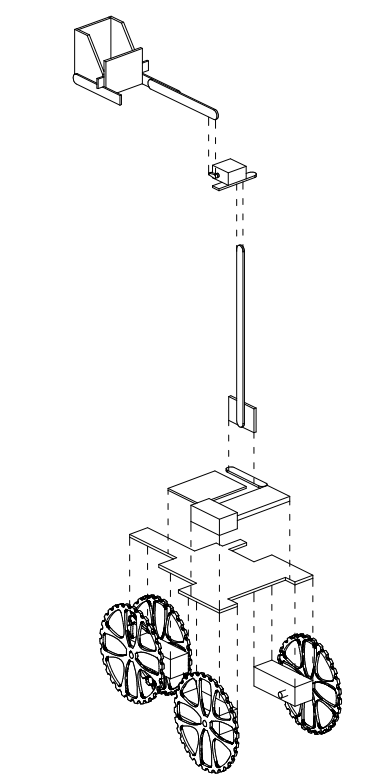
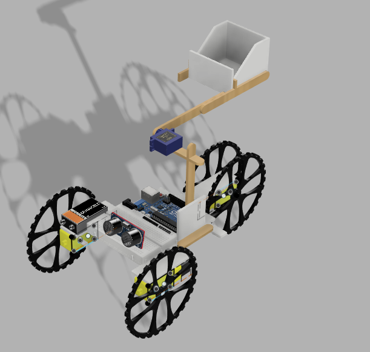
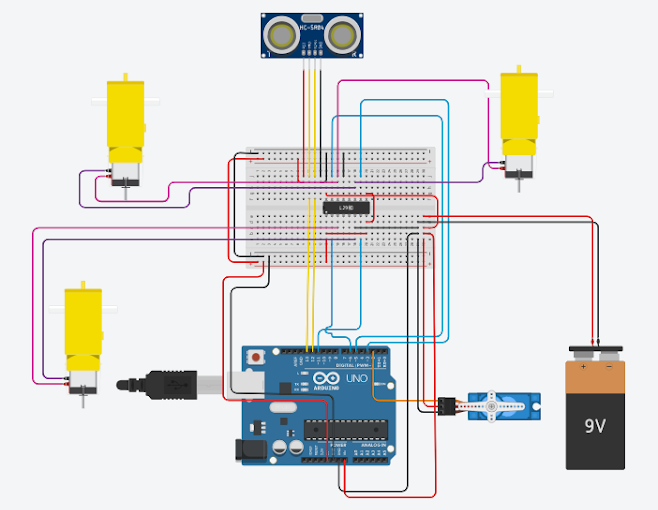
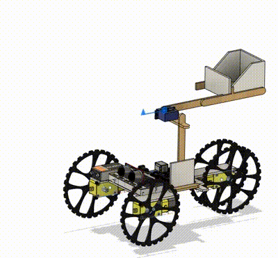
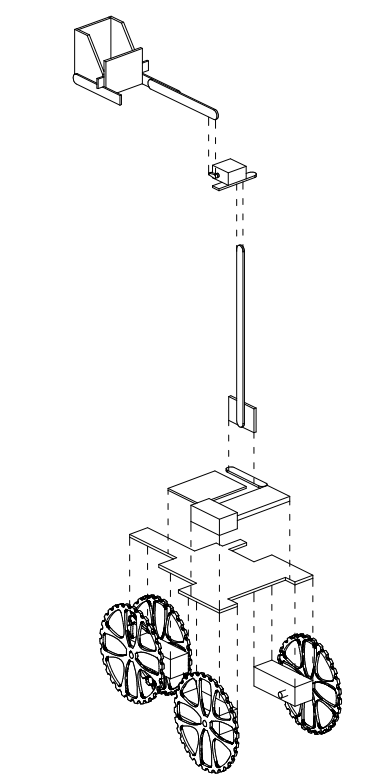
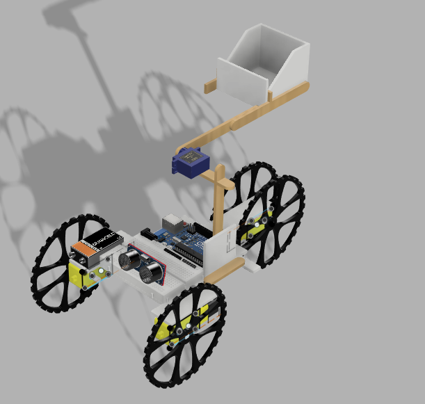
Tech Stack:
- Arduino programming for motor control and sensors
- TinkerCAD for 3D modeling and circuit simulation
- Mechanical engineering and constraint-based design
- Precision sensor programming for distance measurement
- Real-time control systems and autonomous navigation
Key Features:
- CAD modeling and 3D design prototyping
- Precision distance measurement and control
- Mechanical ball delivery system
- Optimized for speed and accuracy
- Built with limited material constraints
Let's Connect
I'm always interested in discussing new opportunities, innovative projects, or just having a chat about technology and engineering.
Feel free to reach out: riccoljy@gmail.com